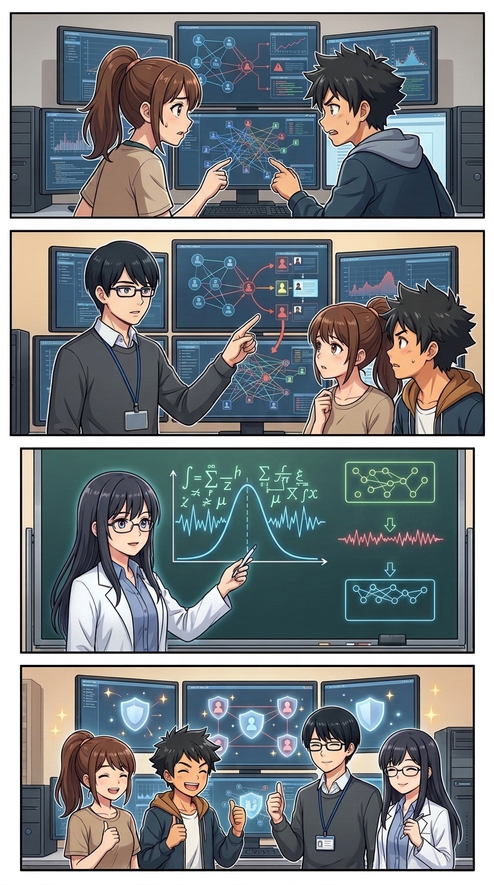
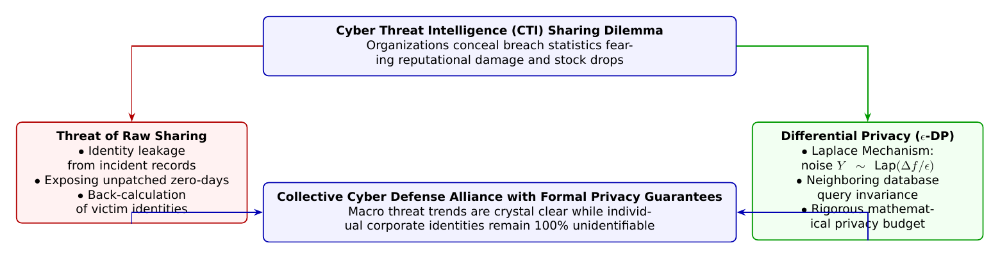

🎨 4コマ漫画挿絵（文字なし）
AI高解像度生成
▲ 【挿絵】青葉台高校 情報科学部＆帝都科学大学サイバーディフェンス・ラボでの実践シーン
💬 4コマ漫画キャラクターセリフ (Story Dialogue Script)
日・英バイリンガル (JA / EN)[蓮]「自社のセキュリティの穴や顧客情報の漏洩を疑われて、株価や社会的信用が落ちるのを恐れるんだよね」
[Ren] "They fear revealing vulnerabilities might cause stock drops and public distrust."
[悠真]「真の集計値に絶妙に計算されたランダムなノイズ（ラプラス分布）を意図的に混ぜるんだよ」
[Yuma] "We inject carefully calibrated random mathematical noise from a Laplace distribution into aggregated stats!"
[蓮]「どの企業が被害を受けたかは完全に隠されたまま、社会全体の防衛知能だけがクリアに浮き彫りになるんだね！」
[Ren] "Individual victim identities stay 100% hidden, yet collective threat intelligence emerges sharply!"
[全員]「数理の揺らぎが組織を守り、共有の勇気が社会全体の盾となる！」
[All] "Mathematical perturbation shields organizations, while shared courage armors society!"
📖 小説本文
冬の夕暮れ、青葉台高校の情報科学部室。大型モニターには、国内の主要インフラ企業や製造業におけるサイバー攻撃検知件数のグラフが映し出されていた。しかし、その多くは企業名が空欄のまま、データの提供元も「非公開」のラベルが貼られている。
「……せっかく素晴らしい脅威インテリジェンス（CTI: Cyber Threat Intelligence）の仕組みがあっても、これじゃ情報がスカスカだよ」
橘葵がため息をつきながら画面を見つめた。 「どの企業がどんなマルウェアに感染して、どのポートを突かれたのかをリアルタイムで共有し合えば、他の企業も事前にパッチを当てて防げるのに。どうして企業は被害情報を隠したがるの？」
「企業にとっては死活問題だからだよ、葵先輩」神崎蓮が端末のキーを叩きながら言った。「『我が社は先週ランサムウェアに侵入されました』なんて正直に報告したら、株主から責任を追及されるし、取引先から契約を切られたり、セキュリティが甘い企業だと世間に叩かれてしまう。『情報を出せば社会のためになる』と分かっていても、自分から進んで泥を被りたくないのが組織の本音なんだ」
「その板挟みを技術的に解決するのが、今日のテーマだよ」
ドアを開けて入ってきた城崎悠真が、横浜国立大学SPIRALの最新研究ノートを机に広げた。 「組織が自社の機密や被害事実を1ミリも漏らさずに、社会全体の脅威動向だけを完璧に集計・共有する――それを可能にする数学理論が**『差分プライバシー（Differential Privacy: DP）』**なんだ」
白石結衣の目がパッと輝いた。 「シンシア・ドワーク（Cynthia Dwork）博士らが2006年に提唱した現代統計学と暗号数理の至宝ですね！ AppleのiOSテレメトリ収集や、米国国勢調査（US Census）でも採用されている、数理的に厳密なプライバシー保護技術です！」
「差分プライバシー……？ 暗号化とは違うの？」葵が小首をかしげた。
---
📊 セキュリティ構造図解 (TikZ LuaLaTeX生成)
国家安全基準・工学図解
▲ 【技術構造図】IPAデジタルスキル標準・国際規格に準拠した仕組みのモデル化